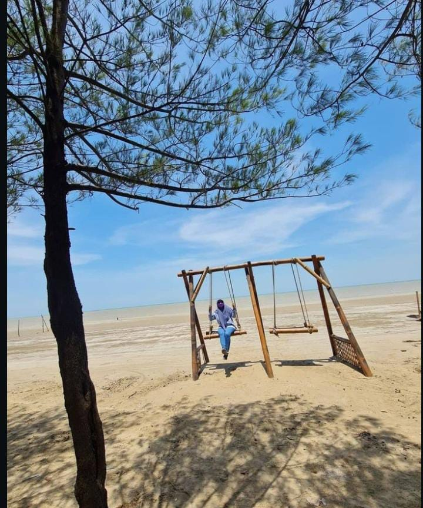
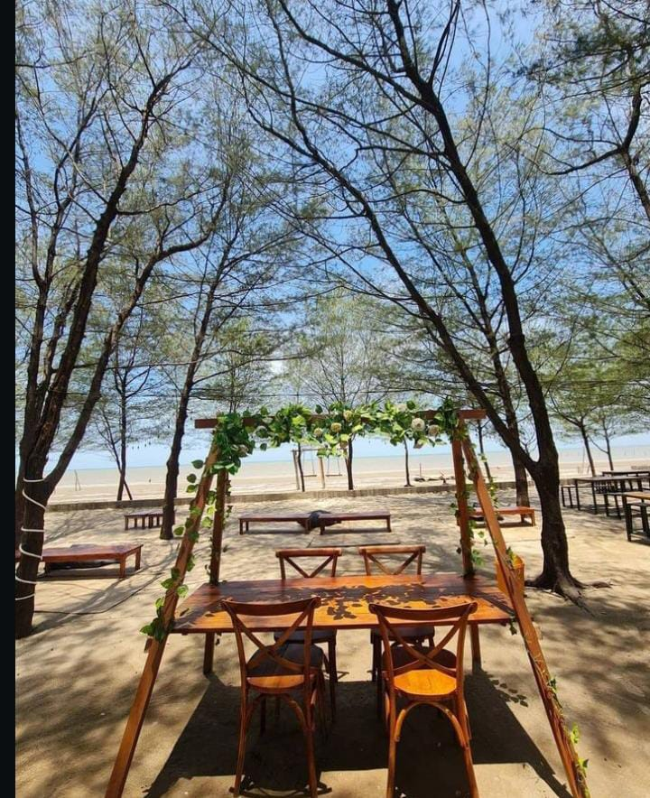
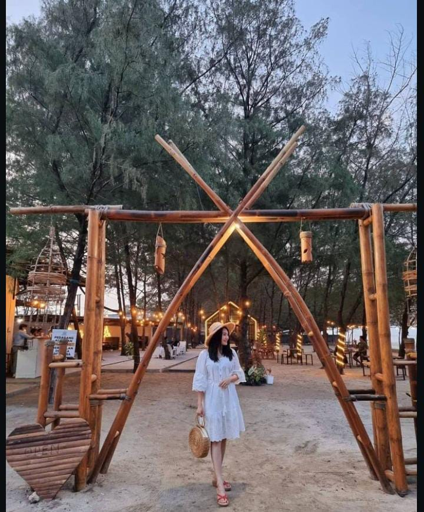
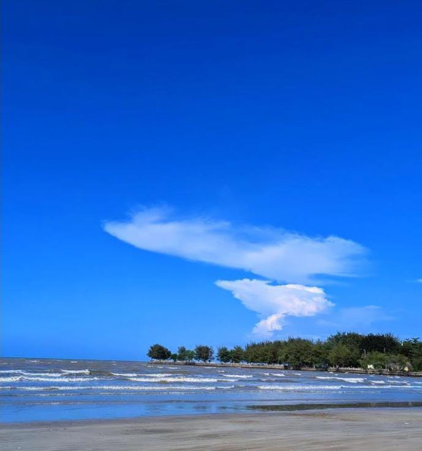
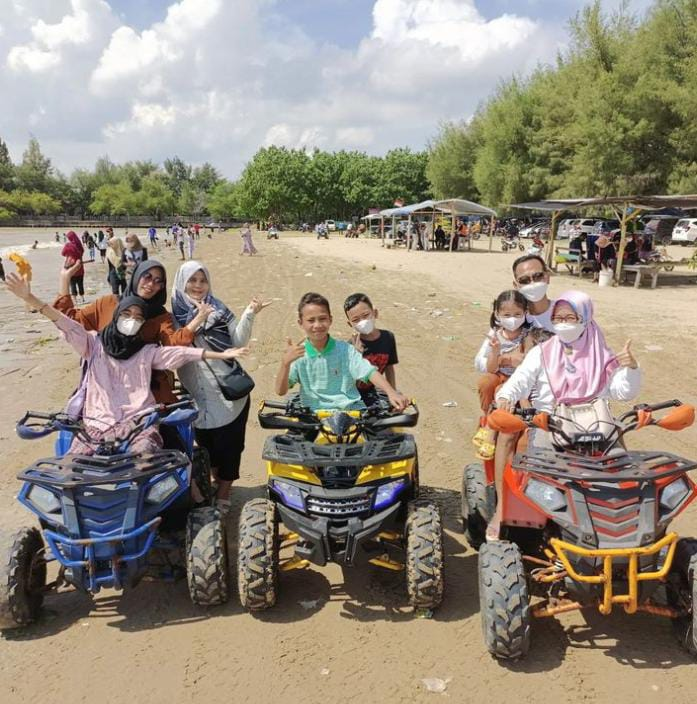

Deskripsi
Pantai Cemara Tuban salah satu obyek wisata yang cukup populer di Tuban, Jawa Timur. Pantai ini menawarkan suasana pantai yang teduh dengan jejeran pohon cemara di sekelilingnya. Pantai Cemara Merupakan salah satu wisata pantai dengan garis pantai terpanjang di Kabupaten Tuban, tempatnya yang sangat strategis berdekatan dengan jalan Pantura dan dekat dengan Terminal Baru Tuban.
Lokasi
Desa Purworejo, Kecamatan Jenu, Kabupaten Tuban
Harga tiket masuk
Rp.5000 per sepeda motor
Rp.10.000 per mobil
Fasilitas
- Tempat parkir
- Kios makanan dan minuman
- Gazebo
- Mushola
- Kamar mandi
- ATV